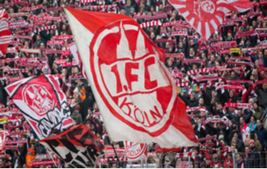

Quizzübersicht
-
315 mal gespielt
Das FC-Quizz schlecht hin. Der wahre FC Fan beantwortet diese Fragen im Schlaf. Dabei handelt es sich nicht nur um Fragen zur Fußballerischen Geschichte des Vereins, denn der FC hat auch außerhalb des Platzes eine große Geschichte. Mit diesem Quizz kannst du dein Wissen über den besten Verein der Welt testen. Los geht's!
-
315 mal gespielt
Das FC-Quizz schlecht hin. Der wahre FC Fan beantwortet diese Fragen im Schlaf. Dabei handelt es sich nicht nur um Fragen zur Fußballerischen Geschichte des Vereins, denn der FC hat auch außerhalb des Platzes eine große Geschichte. Mit diesem Quizz kannst du dein Wissen über den besten Verein der Welt testen. Los geht's!